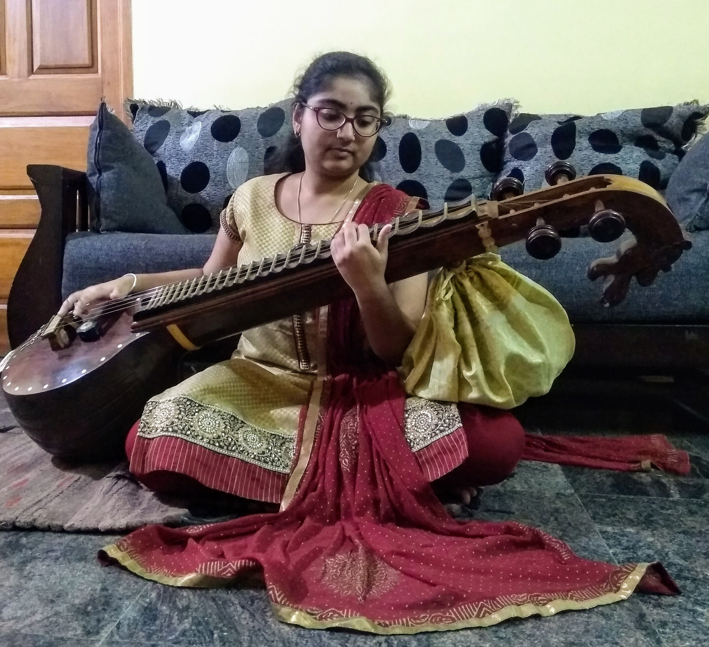

As Maria August quotes "Music - what a powerful instrument, what a mighty weapon!"
Little did I know the power of this instrument when I saw my mother playing Veena. My mother's love towards music helped in inclination of my interest towards veena. As a kid, I would sneakily pluck random Veena strings all the time. This is picture in one of situtation when I wanted to play the instrument or wanted to just pose, I dont remember.
My mother is my first mentor, she taught me how to hold and play few notes from this beautiful instrument Veena. I was around 8 or 9 years at that time. I always tried mimicking whatever Amma would play. I started taking classes when I was 10 years old from my first Guru Vid.M Dwarkish.

It was during my first year of engineering where I started getting recognized during college fests and ceremonies. This gave me a huge boost to perform in front of crowds. When the crowd enjoyed and cheered when I played film covers, I started doing and performing well known film music.
During my second year of engineering I got introduced to my present guru VainikaRatna Vid. R K Padmanabha in Mysore. It is an honour learning under him. I had to make up and down trips to Mysore every weekend to learn under him. It was initially exhausting to manage both college and weekend travel to Mysore, but my love and passion for this instrument and with my parents as my backbone I saw past this hurdle.
I recently started a YouTube channel where I upload all my Veena covers mainly film songs. My first cover Innunu Bekagide garnered a lot of attention. It was even appreciated by the lead singer Vasuki Vaibhav and the actors, director of Mundina Nildana!! When I got to know about this, I was over the moon.
I was overwhelmed when my cover reached many people in this way and I could even connect to many other veena artists in this way.
This intricate instrument has shaped who I am today. There is just this indescribable feeling when I put my Veena on my lap and pluck and glide through those 7 strings. I am extremely grateful that I am able to influence people through my music and I will further strive to do so.